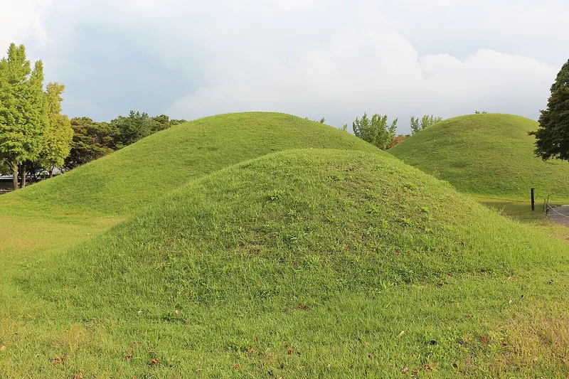

홈 · 발견과 계획
Find your Korea.
See where you could go. Work out how you’ll get there.
여행지 허브 · 나에게 맞는 일정
Gyeongju
Walk among the Silla tombs, then stay for the city’s illuminated ponds and bridges.

기사 · 현장에서 바로 쓰는 안내
Gyeongju after dark
Wolji Pond and Woljeonggyo Bridge in one evening.
Information checked
Where to start
Go to Wolji Pond first for reflections. If crossing the bridge matters more and time is tight, start at Woljeonggyo.
See stops & map links